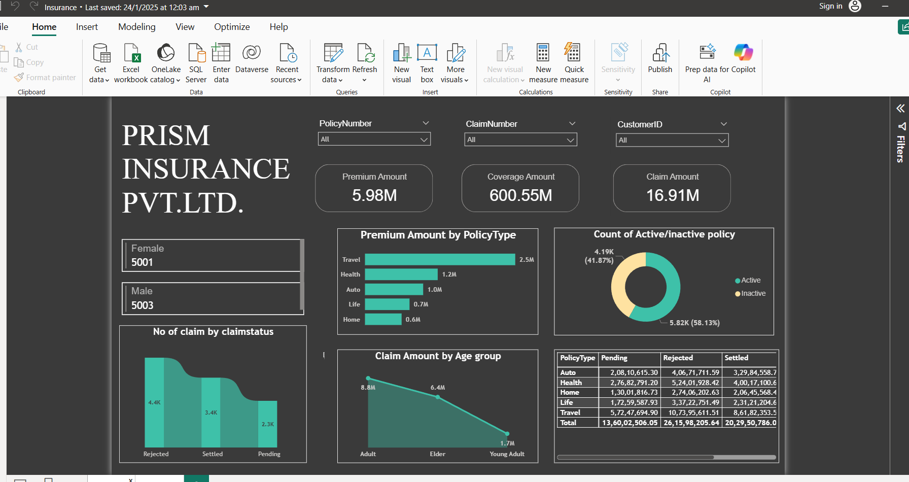

About Me

I am an M.Tech Data Science graduate from JSS Academy of Technical Education, Bangalore. I am passionate about transforming raw data into actionable business intelligence.
My journey involved moving from a Bachelor's in ISE to advanced Data Analytics, where I now focus on Agri-Tech AI agents and SAP S/4HANA (MM).
Tools & Technologies
- Data Analysis: SQL (MySQL/PostgreSQL), Python (Pandas, NumPy)
- Visualization: Power BI, Tableau, Excel
- Advanced Tech: Few-Shot Learning, LLMs, Azure Data Factory
Projects
Mandi Insight | Agri-Tech AI

Developed an AI agent designed to help farmers in Karnataka by providing real-time market prices and sell-or-hold recommendations.
Skin Disease Detection | Research

Published a research paper at ICIDCA on detecting rare skin diseases using Few-Shot Learning.
Power BI: Insurance Dashboard

End-to-end analysis of customer shopping patterns and behavioral trends using SQL and Power BI.
Experience
Cognizant Technology Solutions
Programmer Analyst Intern (May 2025 – Aug 2025)
- Optimized data workflows and business processes.
Innovate Metrics Technologies
Data Analyst Intern (Nov 2024 – Jan 2025)
- Built interactive dashboards and performed SQL-based trend analysis.
Contact
Feel free to reach out for collaborations or job opportunities.